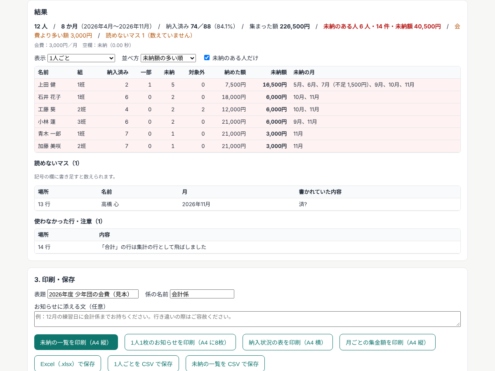

会費・月謝の納入状況の一覧
少年団・自治会・PTA・教室・サークルの集金表（名前×月のマスに「済」「○」「3000」「4/10」などを書いた表）から、未納の人と月、未納の合計額、月ごとに集まった額を出すツールです。会計係の月末の確認、年度末の報告、未納の方へのお知らせづくりに使えます。
- 未納の一覧：未納・一部（会費に足りない）のある人と、その月・不足の額。未納額の多い順にも並べられます
- 月ごと・組ごと：月ごとの納入済みの人数・集まった額・未納額・納入率、班・学年・地区ごとの未納の人数
- 1人1枚のお知らせ：未納のある人だけ、名前・未納の月・合計額を切り取り式で A4 に8枚ずつ印刷（添える文と係の名前は自分で書けます）
ソフトのインストールは不要で、いつものブラウザで動きます。
お試し版はすべての機能を使えて、数えるのは表の先頭10人までです。決済が終わると、そのまま製品版の画面に移動します。ブックマークしておけば何度でも使えます。

見本のデータ（架空の名前と金額）で作った例です。
こんなときに
- 毎月の集金表を見ながら、まだの人を指でたどって探している
- 「済」「○」「3000」「4/10」（入金日）と、係によって書き方がばらばらで、COUNTIF で数えると合わない
- 途中で入会した人・兄弟で免除の人・休会の月があり、未納額を電卓で出している
- 半額だけ納めた月があり、不足の額を出したい
- 総会・役員会に、月ごとに集まった額と未納の件数を報告したい
- 入金の記録（名前・何月分・金額を1行ずつ）から、名簿の全員の納入状況の表を作りたい
できること
- 読める表：①名前×月の集金表（名前が縦、月が横。逆向きの表は「名前が横」にチェック）、②1行に1件の入金の記録（名前・何月分・金額）。②は同じ人・同じ月の入金を足し、名簿を貼れば一度も納めていない人も未納として出します
- マスの読み方：納入済み＝済 ○ 〇 ✓ レ 入金 納 1 など、未納＝× 未 未納 0 など、対象外＝免除 休会 退会 入会前 - など（画面で書き換えられます）。金額（3000、3,000円、¥3,000、3千円）は数字として読み、会費より少なければ「一部」、多ければ「多い」として出します。「4/10」のような日付だけのマスと、「済(4/10)」「済 3,000円」も納入済みとして読みます。読めないマスは場所つきで一覧にします
- 会費：1か月の会費を入れるほか、人によって違うときは「月額」の列、月によって違うとき（入会金の月・半額の月）は月ごとの額を入れられます。会費を 0 にすると、金額は出さずに月の数だけ数えます
- 数え方：空欄を「未納」か「数えない」かを選べます。数える月の範囲（例：4月分〜今月分まで）も選べます
- 見出しの月：「4月」「4月分」「2026/4」「2026年4月」「R8.4」、Excel の日付のセル。年のない月は、月が戻ったところで次の年にします（4月〜翌年3月の年度の表）
- 自動で外すもの：「番号」「合計」「未納額」「備考」などの列、「合計」の行。同じ名前の行は最初の行を使い、一覧で知らせます
- 印刷と保存：未納の一覧（月ごと・組ごと付き、A4 縦）、1人1枚のお知らせ（A4 に8枚、切り取り線つき）、納入状況の表（A4 横）、月ごとの集金額（A4 縦）。Excel ファイル（.xlsx）には1人ごと・未納の一覧・月ごと・組ごと・納入状況の表のシートが入ります。CSV でも保存できます
- CSV（UTF-8・Shift_JIS）と Excel ファイル（.xlsx）を読めます。Excel の表をコピーして貼り付けても使えます
できないこと（購入前にご確認ください）
- 集金・振込の受付、メールや LINE での連絡はできません。すでにある集金表を数えて一覧と印刷物にするだけです
- お知らせの文は、使う方が書いたとおりに入れます。こちらで催促の文を作ることはしません
- 銀行の入出金明細から、誰が何月分を払ったかを見分けることはできません（名前と「何月分」が書かれた表を使います）
- 多く納めた額を、次の月の分に自動で回すことはしません（「多い」として表示します）
- 会計の帳簿づくり・決算・税の計算はしません
- スマートフォンでは操作しにくいため、パソコンでお使いください
Excel だけで数えるなら
名前が A 列、4月〜6月分が B〜D 列で、マスに「済」「×」「免除」か空欄を書いた表なら、1人ごとの未納の月数（空欄と × を未納、免除は数えない）は
=COUNTBLANK(B2:D2)+COUNTIF(B2:D2,"×")
月3,000円なら、未納額はその数×3000 です（E 列に上の式があるとき =E2*3000）。月ごとの納入済みの人数は、列ごとに =COUNTIF(B2:B31,"済") です。
マスに金額を書いている表なら、未納額は
=3000*COLUMNS(B2:D2)-SUM(B2:D2)-3000*COUNTIF(B2:D2,"免除")
で出せます（表計算ソフトで、空欄・半額・免除の行を入れて確かめました）。
注意：COUNTIF は文字がまったく同じものだけを数えます。「済」と「済み」、「○」（まる）と「〇」（漢数字のゼロ）は別の文字なので、混ざっていると数が合いません。先に「置換」で1つの書き方にそろえてから数えてください。
このツールが向いているのは、記号と金額と入金日が混ざっている、入会の月や休会・免除が人によって違う、一部だけ納めた月の不足額を出したい、未納の人に渡すお知らせまで作りたい、毎月同じ確認をする、といったときです。
よくある質問
| データはどこかに送られますか？ | 送られません。読み込み・集計・印刷・保存はすべてお使いのブラウザの中で行います。会費の額と記号などの設定だけをブラウザに保存し、名前や金額は保存しません。 |
|---|---|
| 未納額はどう計算していますか？ | 数える月のうち、対象外（免除・休会など）を除いた月について「会費 − 納めた額」を足したものです。「済」などの記号のマスは会費の全額を納めたものとし、金額のマスはその額を納めたものとします。 |
| まだ締めていない今月の空欄が、未納になってしまいます | 「数える月」を先月分までにするか、「空欄のマス」を「数えない」にしてください。「数えない」にしたときは、空欄を未納に入れず、「×」「未」などと書いたマスだけを未納にします。 |
| 何人まで使えますか？ | 製品版は人数・月数の制限はありません（3,000人×24か月の表を0.1秒ほどで集計できることを確かめています）。 |
安心してお使いいただくために
- 表はお使いのブラウザの中だけで処理し、サーバーには送信しません
- 動作環境：最新版の Chrome・Safari・Edge・Firefox（パソコン）
- 説明どおりに動かない場合は、ご購入から7日以内にご連絡いただければ返金します
練習の出欠表から出席率を出すなら 出欠表の出席率の集計、名簿から当番表を作るなら 当番表の自動作成、名簿の重複を探すなら 名簿の重複チェック もあります。